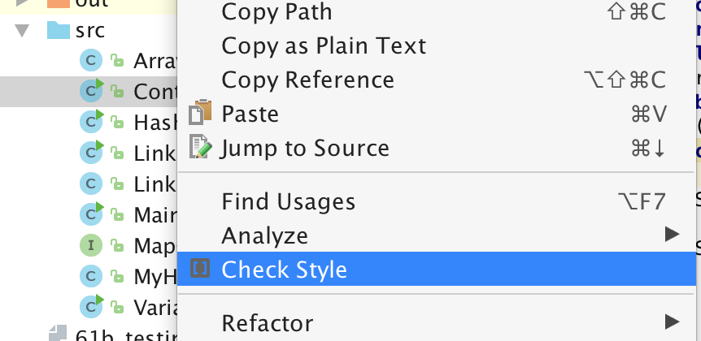
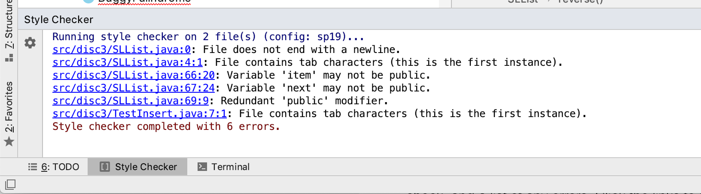
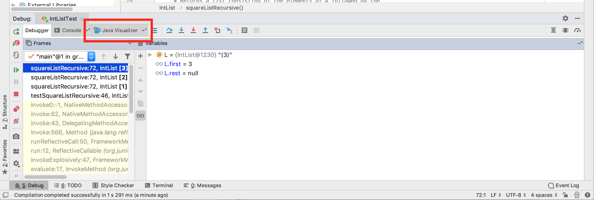
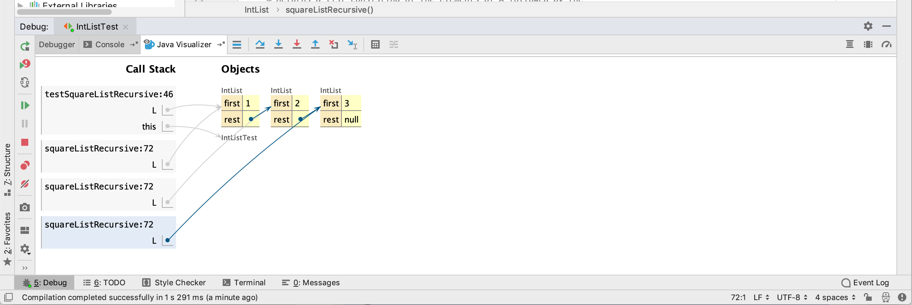

This document will guide you through installing and using the CS 61B IntelliJ plugins. This guide assumes that you already have IntelliJ installed.
Installing
Please follow the instructions in lab2setup to install the plugins.
Using the Plugins
Style Checking
In this class, you will eventually be required to make sure your code conforms to the official style guide. The plugin includes a helpful style checker, which will check your code and inform you of any style errors and their locations.
To run the style checker, simply right click any file or directories you want to check, and select Check Style in the menu that appears: 
Click it, and the style checker will run. A tool window will appear with the results of the style check, and a list of any errors. Click the links to jump directly to the problematic line of code: 
Java Visualizer
The “Java Visualizer” plugin contains a tool similar to the Python Visualizer you may have used in CS 61A. This tool is intended to help you debug and understand your code, and is integrated into IntelliJ’s Java debugger.
To use the built-in visualizer, debug your code, setting breakpoints as necessary. When your code stops, you can click the Java Visualizer tab: 
The Java Visualizer will appear, displaying the stack of the currently paused program: 
As you continue to step through and pause your code, the visualizer display will update accordingly to show you what’s going on in your program.